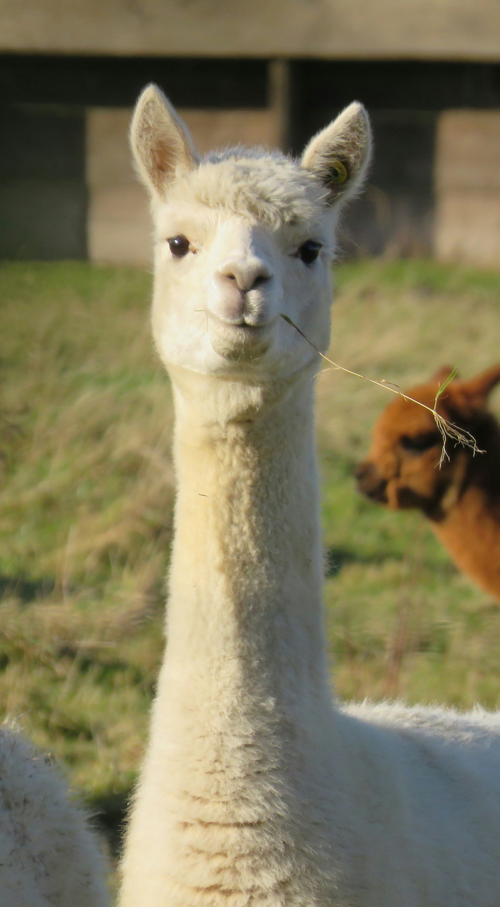
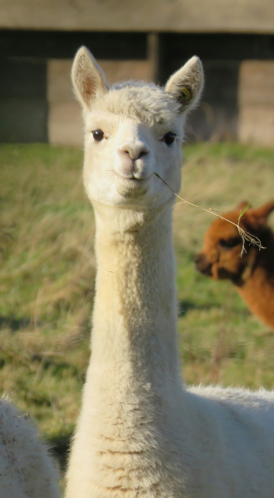
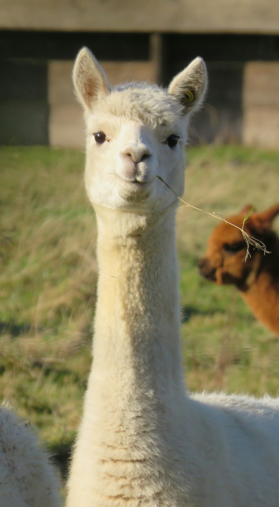

I'm dedicated to enhancing user experiences through thoughtful design and innovative technology. My background in extended reality (XR), user experience (UX), interaction design, accessibility, and sound has equipped me with a diverse skill set well-suited for the dynamic field of HCI research.
With a strong publication record and experience leading and collaborating on successful projects, I have proven my ability to produce high-quality, impactful work. In 2022, I was awarded the prestigious Microsoft Research PhD Fellowship and later completed an internship with the Collaborative Intelligence team at MSR Cambridge. Research contributions produced during my internship have been shared with wider groups at MSR, directly informing their research directions.
Driven by the potential of Natural User Interfaces, XR, and AI/ML to reshape how we interact with digital content, I’m committed to leveraging these technologies to deliver more practical, intuitive, and personalised experiences. With a broad knowledge base in interaction design, UX research, and development, I thrive on applying logical thinking and methodical approaches to develop new concepts and address real-world problems. I’m eager to apply my technical skills and theoretical knowledge to produce research with real-world impact.
I have a background in Music Technology, where after using music software and tinkering with hardware and electronics, I began to develop my passion for interactive systems. Following my BSc, I completed an MSc in User Experience Design, where I gained a strong interest for user-centred research and advanced and immersive technologies. This led me to specialise in interaction design.
I’m always up for meeting new people and learning something new! Outside of work I enjoy listening to music, playing video games and the acoustic guitar, reading, travelling and looking at cute pictures of alpacas
Your resume content goes here.
It would be great to hear from you! Reach out via email or connect with me on LinkedIn.
